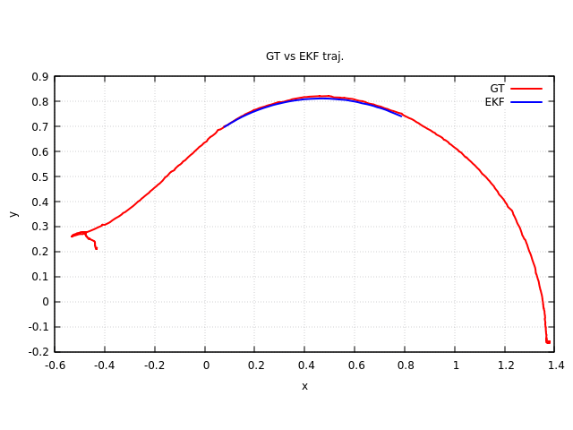
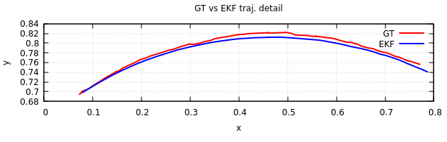
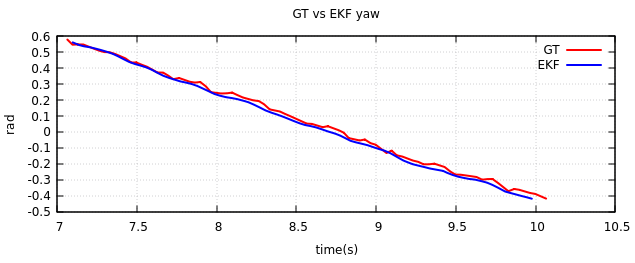

Robot firmware updates and ROS2 package upgrades for better odometry, timing and motor control via upgrades of the UGV02 FW and SW stacks. The general design constraints were:
- Stick with the current ESP32/Waveshare robot board. There are viable, likely better alternatives, such as the HiWonder STM32-based Ros Robot Controller v1.2. This card could be used to run, for example, Ardurover on the robot, with better time sync and control connections to the robot host (e.g., the NVIDIA Orin).
- Generally re-use as much of the UGV02 Waveshare firmware as possible. Try to avoid major rewrites of the FW code base - which is tempting!
- Retain Arduino IDE for FW build and deploy.
- Rewrite the core UGV02 ROS2 nodes in C++ for performance.
- Attempt to improve proprioceptive odometry (a challenge for skid-steer robots) so that the ROS2 localization (if not SLAM) stack operates smoothly and robustly, with the robot performing few recovery actions during navigation. The current ROS2 stack requires Lidar odometry (rf2o_laser_odometry) due to deficiencies in odometry.
- Use AI tools to accelerate development, design and coding. Avoid AI use in updating FW.
- Adapting the ROS2 navigation stack running on the robot is in-bounds. For example, odometry (especially proprioceptive) is very difficult for a skid-steer robot with high angular velocity (e.g., spin-in-place). One option is to simply not do this. The use of Reeds-Shepp trajectories would prevent high angular velocities, for example.
- Concentrate on indoor performance first - the skid-steer kinematics are hopefully stable for (fixed) indoor surfaces.
Robot architecture
As a first implementation, a single, modest data update rate (28.5Hz) is chosen. This simplifies a (custom) EKF implementation for sensor fusion, and may (data is presented below) be adequate for indoor surfaces at slower speeds.
The UGV02 hosts an ESP32 processor, an IMU (ICM 20948), the motors and PWM drivers, and the motor encoders. For simplicity, the IMU DMP (Digital Motion Processor) is set to produce a ~28Hz FIFO stream of filtered IMU data. The ESP32 main loop polls the IMU FIFO much faster than 28Hz, and clears the FIFO buffer faster than it is filled. When an imu update occurs, PID loops are computed and outputs applied to the motors. For each imu update, timestamped IMU and encoder data is sent back to the host computer via USB UART telemetry. The host computer computes robot odometry using sensor fusion via an EKF - fusing the IMU gyroscope and motor encoder data (see the EKF section).
In order to provide timestamps synchronized across the LAN for UART telemetry, SNTP is used to synchronize the UGV02 ESP32 clock with an NTP chrony server on the LAN. All hosts on the LAN are running chrony and targeting the same host as the (local) timeserver.
The UGV02 ESP32 wireless is used to provide clock sync, all of which is provided by standard ESP32 WiFi modules. While not as precise as other synchronization methods, this is well within the capabilities of the ESP32 SW stack. It is also less hacky than some sort of custom synchronization via the UART channel (and also independent of the UART channel, to some degree). A refinement of this approach would be for the robot host (the Orin, for UGV02x) to be the chrony timeserver. However, in development, it is easier to use a more stable (than the robot) local timeserver on the LAN.
| Manuf. | Model | Description | Count |
|---|---|---|---|
| EBYTE | ESP32-WROOM-32UE | microcontroller | 1 |
| WCH | CH343 | USB-to-UART | 2 |
| InvenSense | ICM20948 | IMU | 1 |
| Waveshare | DCGM-370-12V-EN-333RPM | brushed motor | 4 |
| Toshiba | TB6612FNG | Dual channel H-bridge | 2 |
flowchart LR
subgraph RH["Robot Host(Orin)"]
USBR["USB"]
WR["WiFi"]
end
subgraph IMU["IMU (20948)"]
DMP["DMP
28.5Hz
FIFO"]
end
LF --- TB1
TB1["TB6612FNG"] --- LEDL
RF --- TB2
TB2["TB6612FNG"] --- LEDR
subgraph LF["LF motor"]
ELF["encoder"]
end
subgraph RF["RF motor"]
ERF["encoder"]
end
TB3 --> LR["LR motor"]
LEDL --> TB3["TB6612FNG"]
TB4 --> RR["RR motor"]
LEDR --> TB4["TB6612FNG"]
ELF --> ESP32
ERF --> ESP32
USBR <--> |"USB Telemetry/Control" | UC["CH343"]
UC <--> |UART| ESP32
WR <-.-> |chrony time sync| LAN["LAN"]
LAN <-.-> |SNTP time sync| W
subgraph ESP32["ESP32"]
LEDL["LEDC
PWM
left"]
LEDR["LEDC
PWM
right"]
W["WiFi"]
end
ESP32 <--> |I2C| DMP
ESP32 --> |I2C| OLED["OLED
display"]
The robot uses I2C for both the OLED display update and IMU comms. All updates to the OLED display are done at a slow rate - 5 seconds between updates to reduce I2C load. Updating the OLED screen every iteration of the fast polling loop is certainly to be avoided.
PI motor control
The skid-steer geometry of the UGV02 couples the kinematic response of the robot (it's heading and velocity) through the ground (or floor) surface. In order to achieve a high degree of control authority over the robot, it is beneficial to control the motors via their coupled motion, i.e. through the kinematic model. In this case (see the section on the EKF below), the kinematic model is not entirely known, as it is dependent on the nature of the ground surface the robot is driving on. As a nearby control alternative, the robot's L/R differential and sum velocities are controlled by a PI loop. This moves the unknown parameter of the kinematic model to the ROS2 side, where perhaps it can be part of the perception stack (in the future). Furthermore, to make the robot responsive, we include a calibrated feed-forward model into the controller. See the diagram below.
flowchart LR
VW["cmd_vel twist"] --> IK["Inverse
Kinematics"]
IK --> LC["Left speed (m/s)"]
IK --> RC["Right speed (m/s)"]
LC --> U["UART/USB"]
RC --> U
flowchart LR
U["UART/USB"] --> L["L"]
U --> R["R"]
L --> P1["(L+R)/2"]
MES["(EL+ER)/2"] --> PE
R --> P1
L --> M1["(R-L)/2"]
DES["(ER-EL)/2"] --> PEM
R --> M1
P1 --> FF["FF"]
P1 --> PE["-"]
PE --> KP["Kp"]
KP --> P2["+"]
FF --> P2
P2 --> MEAN["M (Mean ctrl)"]
PE --> KI["Ki"]
KI --> I1["∫dt"]
I1 --> I1LIM["anti
-windup"]
I1LIM --> P2
M1 --> FFM["FF"]
M1 --> PEM["-"]
PEM --> KPM["Kp"]
KPM --> P2M["+"]
FFM --> P2M
PEM --> KIM["Ki"]
KIM --> I1M["∫dt"]
I1M --> I1MLIM["anti
-windup"]
I1MLIM --> P2M
P2M --> DIFF["D (Diff ctrl)"]
MEAN --> M3["(M-D)"]
DIFF --> M3
MEAN --> P3["(M+D)"]
DIFF --> P3
M3 --> MC["Clamp"]
MC --> MSL["Slew-rate limiter"]
MSL --> LM["left motor"]
P3 --> PC["Clamp"]
PC --> PSL["Slew-rate limiter"]
PSL --> RM["right motor"]
LM -.-> LE["EL: left encoder
speed"]
RM -.-> RE["ER: right encoder
speed"]
The TB6612FNG (see Table 1) motor drivers can easily be damaged by large, fast changes to the PWM commands sent to the motors. There are two lines of defense against this. First, the PWM sent to the motors is clamped at maximum PWM limits, and zeroed out when below a threshold. Second, the PWM motor commands are slew-rate limited - that is, the change in the PWM command between adjacent time points is limited to a fraction of the full motor PWM range. These motor protections are shown in Fig. 3.
Finally, wind-up controls are implemented to improve motor control and responsiveness (these are also shown in Fig. 3). There are a series of anti-windup steps implemented:
- If setpoints and current speeds are below thresholds, the integral term is zeroed.
- If setpoints change sign, the integral term is zeroed.
- If the current motor command was obtained under PWM clamping or slew-rate limiting, the integral term is not accumulated. This is done independently for mean and differential commands/integral terms.
- Integral terms are clamped at maximum values.
Sensor fusion for odometry
As mentioned previously, sensor fusion is performed at a single data rate (28.5Hz). This rate is a chosen update frequency of the ICM20948 DMP. Later versions will concentrate on higher rates for IMU integration, and may use more standard SW tools for sensor fusion (like the ROS2 robot_localization package).
A detailed description of the EKF for sensor fusion is provided in: EKF Derivation (PDF) .
Tests of the EKF are included in ugv_ws/src/ugv_main/ugv/test/test_ekf.cpp. These tests compare ekf trajectory estimates with the "ground truth" data. The ground truth is obtained via an overhead camera tracking an aruco tag attached to the robot. Note there is some noise in the ground truth, especially in the yaw angle. These tests compute the EKF estimates on BAG files collected for a planned trajectory. A more thorough test would involve collecting trajectories at various curvatures and speeds.


